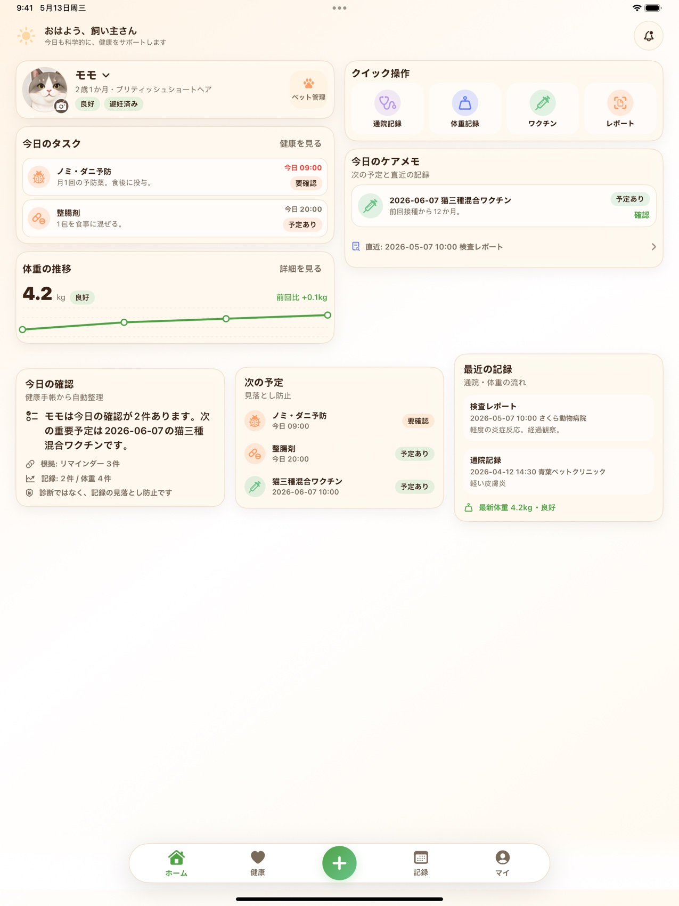

健康ノート
ペットごとに、体重、通院メモ、検査結果、投薬メモ、食事や体調の変化を整理できます。
犬猫の健康手帳アプリ
ペット健康管理 PawCare は、通院メモ、予防予定、体重推移、病院・費用、検査レポート、写真、PDF をペットごとに整理できる iPhone・iPad アプリです。
掲載画像は PawCare の実際の iPhone / iPad 画面です。PawCare は診断、治療、緊急時の判断を提供しません。


ペットごとに、体重、通院メモ、検査結果、投薬メモ、食事や体調の変化を整理できます。
ワクチン、フィラリア、ノミ・ダニ対策、次回通院など、忘れたくない予定をリマインダーとして管理できます。
かかりつけ病院、診察代、薬代、検査費、未精算メモを残し、ペットごとの支払いをあとから確認できます。
iCloud Key-Value Store、バックアップコード、招待コードで、健康手帳データを自分の端末や家族へ受け渡せます。
病院でもらった PDF、検査表、処方メモ、写真を記録に添付し、あとから探しやすい形で保管できます。
Real app screens
記録を残す、読み取る、あとから探す。PawCare の価値が伝わりやすい画面だけを並べました。

症状、検査結果、関連レポートをまとめて保存。次回の通院前に見返しやすくします。

検査表や書類を読み取り、記録の下書き作成を補助。保存前に内容を確認できます。

通院履歴や添付資料を共有しやすい形に整理。必要な情報を病院や預かり先へ渡せます。
PawCare の OCR とスマート整理は、書類の内容を記録に結びつける補助機能です。読み取り結果は確認してから保存する前提で、病名の確定、治療方針、薬の安全性判断を行うものではありません。
広い画面では、今日のタスク、ケアメモ、最近の記録を同時に確認できます。家族で情報を見返すときにも使いやすいレイアウトです。

PawCare は、飼い主が獣医師との会話や日々の変化を忘れないための個人用ノートです。症状の評価、診断、治療、投薬量の判断、緊急度判定は行いません。